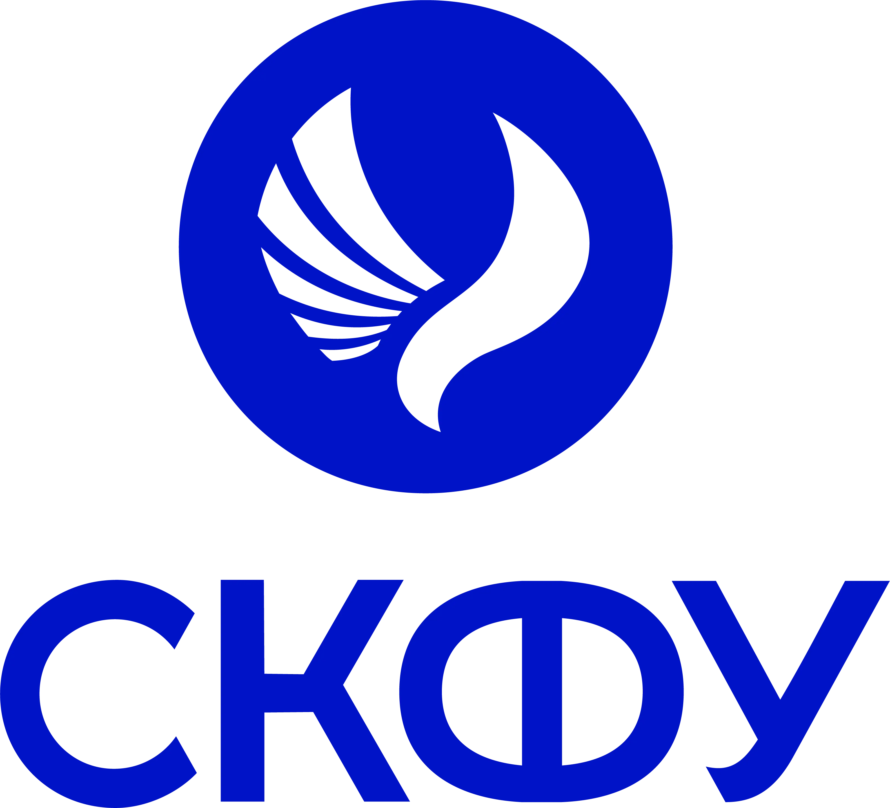

Добро пожаловать
Коротко об авторе
Привет!
Я Бабаян Артём, студент группы ПИЖ-б-о-26-1 Института информационных технологий и кибербезопасности Северо-Кавказского федерального университета (СКФУ).

Привет!
Я Бабаян Артём, студент группы ПИЖ-б-о-26-1 Института информационных технологий и кибербезопасности Северо-Кавказского федерального университета (СКФУ).
